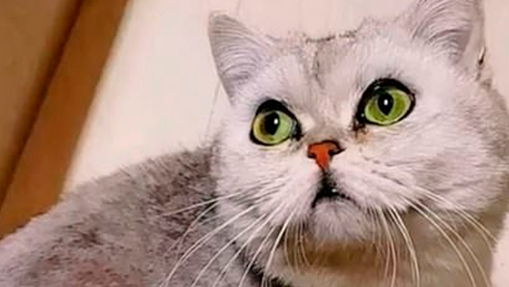
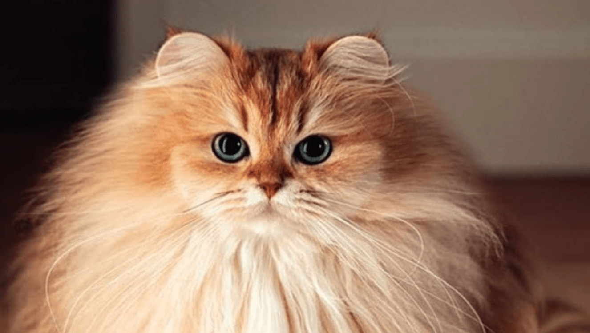
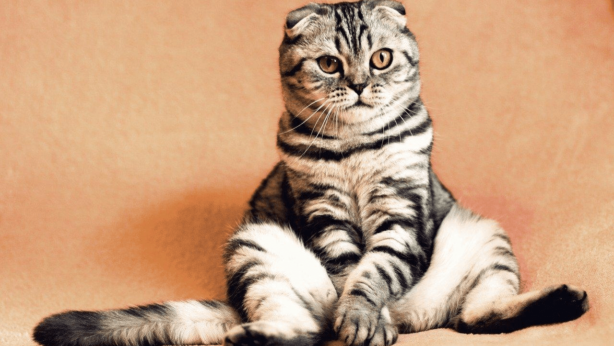
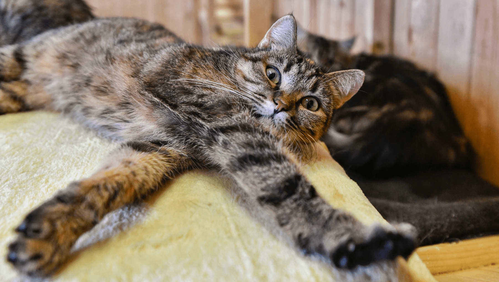
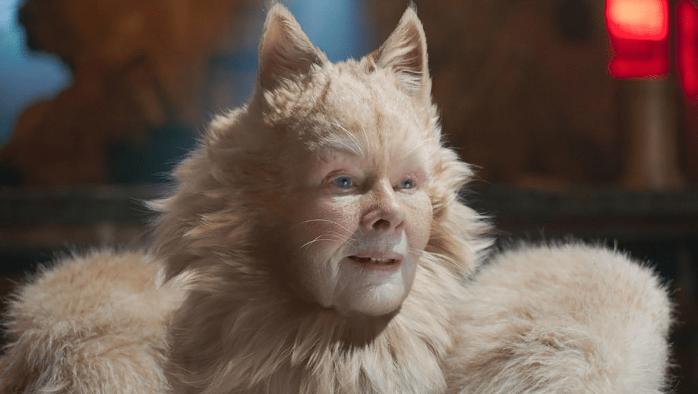
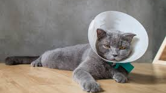
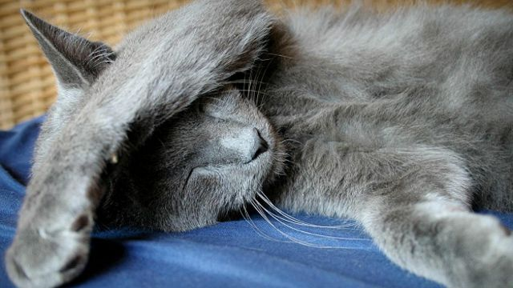
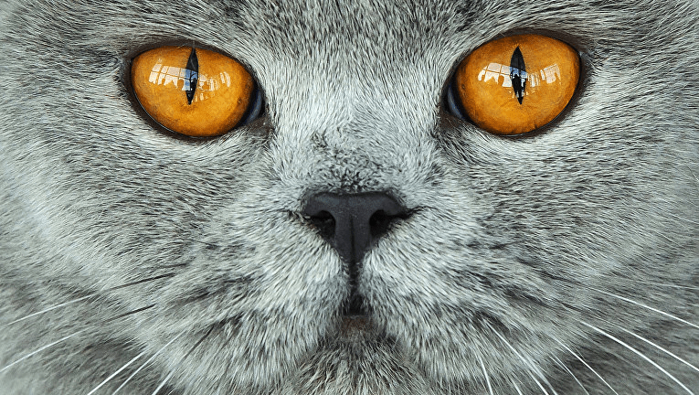
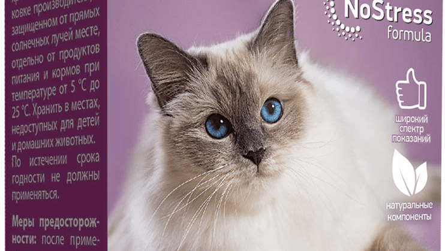

Мурмаркет

Возраст: 3 года
Порода: нет
Болезни: нет
Статус: ищет хозяина
Дружелюбная, ласковая.
Если хотите здоровую кошку, которую можно погладить без
опасения, Хорми - ваш выбор.
Возраст: 2,5 года
Порода: нет
Болезни: нет
Статус: ищет хозяина
Сумашедший, способный за себя постоять.
Ваши дети захотели кота? А вы не хотите портить здоровья бедных
животных (за исключением ваших детей)? Берите эту
Супер-пупер-мега
сумашедшая мявкалку и запасайтесь бинтами и кормом!

Возраст: 1 год
Порода: ангорская кошка
Болезни: айлурофобия
Статус: ищет хозяина
Даёт гладить, ненавидет кошек.
Данная кошка ненавидет и пытается уничтожить любых
представителей семейства кошачьих, в том числе и своё отражение.
Но если убрать других кошек и зеркала, то это животное
превращается в мягкое, наимилейшее создание. И нет, кошка не
переворачивает столы!

Возраст: 5 лет
Порода: бенгальская кошка
Болезни: нет
Статус: ищет хозяина
Серьёзный, любит свободу.
Идеальный вариант, если вам нужно перевоить всех мышей, крыс,
кротов, голубей дома и в огороде.

Возраст: 1 год
Порода: американская короткошёрстная
кошка
Болезни: нет
Статус: ищет хозяина
Обожает идти на ручки, дружелюбен.
Самая громкая мурлыкающая машина на кошачьем западе! Будьте
аккуратны, чрезмерная громкость мурчания опасно для кошачьих и
ваших ушей.

Возраст: 5 лет
Порода: ангорская человек-кошка
Болезни: человекообразность
Статус: ищет хозяина
Говорит по-русски.
Официально, Шарик - кот, но по манере не отличается от людей.
Если вы хотите домой кошкомальчика, милости просим!

Возраст: 4,5 год
Порода: американская короткошёрстная
кошка
Болезни: блохи
Статус: ищет хозяина
Одинокий, грустный.
Данный кот передически становится переносчиком блох, из-за чего
от него отказались 3 семьи! Если вы готовы лечить его, одарить
его лаской и заботой, помогите этому самому грустному коту :(

Возраст: 1 год
Порода: нет
Болезни: христианин
Статус: ищет хозяина
Отрешённый, вечно молится.
Самый религиозный кот в мире! Обожает кресты и всё золотое.

Возраст: 5 лет
Порода: зергообразная кошка зел-нага
Болезни: избыток пси-энергии
Статус: ищет хозяина
Управляет пси-энергией, контролирует людей.
С этой кошкой вы узнаете, что такое человеческие мысли в
кошачьей голове, как зерги живут, и сколько осталось до конца
порочного цикла зел-нага.

Возраст: 4 года
Порода: кошка-коробка
Болезни: окоробкорачивание
Статус: ищет хозяина
Мяукающая коробка, просто мяукающая коробка.
Странная коробка, которая мяукает, когда в ней заканчивается
корм. Куда он девается - никто не знает.